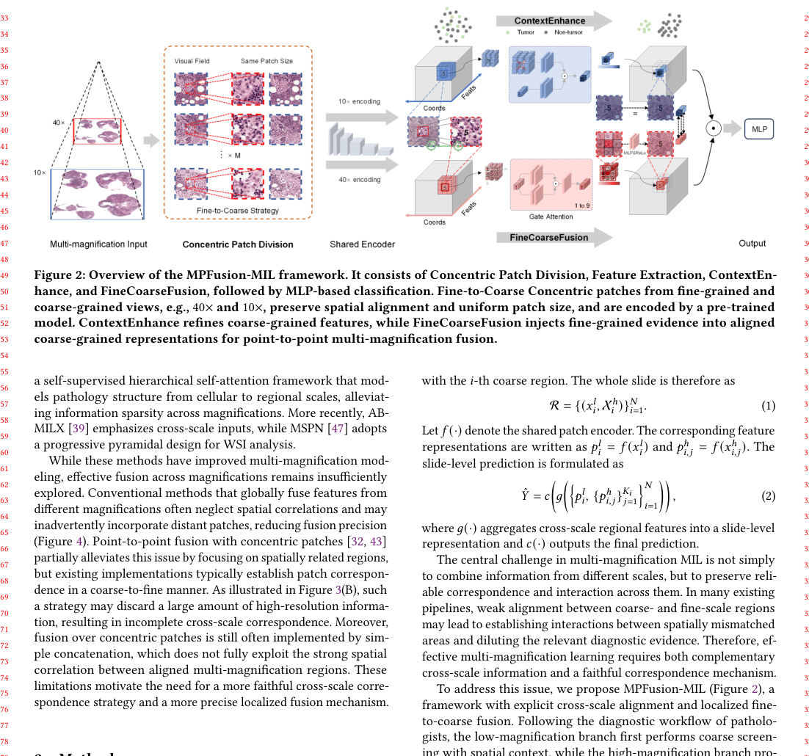

† Corresponding author.
Multi-magnification multiple instance learning (MIL) is widely used for whole-slide images, but many methods fuse coarse and fine features without reliable spatial correspondence. High-resolution evidence is then injected into the wrong low-resolution regions, and coarse screening features lack enough local context for precise diagnosis. MPFusion-MIL keeps explicit fine-to-coarse alignment and performs morphology-guided fusion at corresponding locations.

Fig. 2 shows the three stages. Fine-to-Coarse Concentric Patch Division preserves spatial correspondence across magnifications. Context-Guided Patch Representation Enhancement then enriches coarse screening features with localized context. Precise Spatial Fusion injects high-magnification evidence only into the aligned low-magnification regions, after which a standard MIL aggregator produces the slide-level prediction.